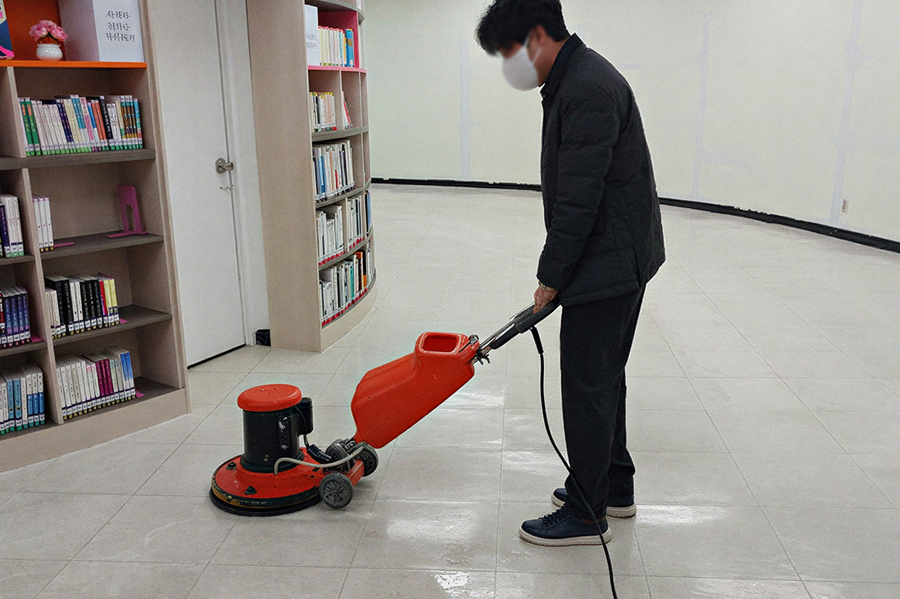
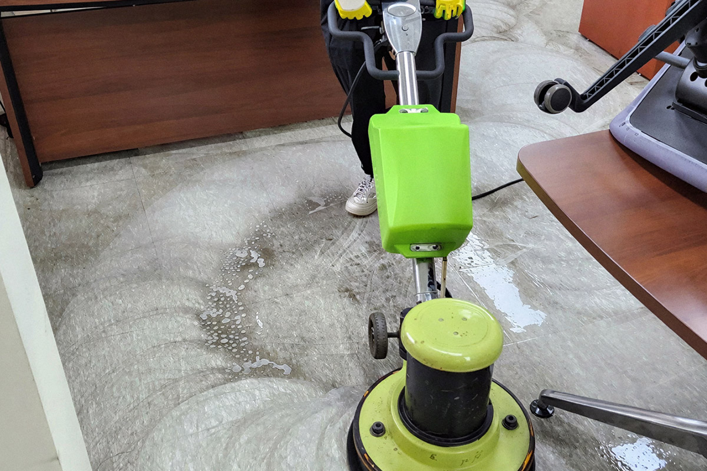
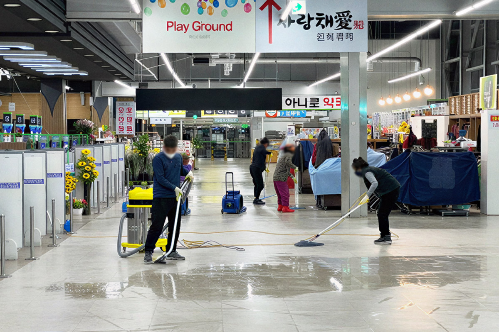

왁스 작업
사라진 바닥의 광택을 다시 살려내다
대리석 바닥은 청소 작업시 특수 약품이 필요하며 필요에 따라 총 4번의 반복작업이 필요합니다. 전문 업체에 맡기지 않을시 바닥 광택은 금방 사라지며 작업 주기가 짧아지기에 신중하게 선택해야만 합니다.
왁스 작업 대상
사무실
회사
창고
상가
스파
대리석 바닥
개인을 제외한 사무실, 관공서, 병원, 박물관, 호텔, 대형 스파 시설의 대리석 바닥이 작업 대상입니다.
왁스 작업 종류

박리 작업
작업전 기존에 도포된 광택제를 모두 제거합니다.
1차 박리작업에 광택제가 완전히 제거되지 않았을 경우
2차, 3차 작업하며 세척 성분이 남지 않게 합니다
박리작업이 완벽하게 끝나면 건물은 숨을 쉬고 오랫동안 수명을 연장할 수 있습니다.

세척 작업
바닥 표면에 남아있는 오염물과 이물질을 깨끗하게 제거합니다.
박리작업 이후 바닥 상태를 정리하고
다음 작업이 원활하게 진행될 수 있도록 준비합니다.

복원 작업
세척 작업으로 손상되거나 오염된 바닥면을 정리합니다.
바닥의 상태에 맞는 작업을 진행하여
기존의 광택과 상태를 복원합니다.

코팅 작업
마무리 단계에서 바닥 표면에 보호 코팅을 진행합니다.
오염과 마모를 줄이고 바닥의 광택과
청결한 상태를 오래 유지할 수 있도록 합니다.
왁스 작업 갤러리
왁스 과정을 확인 할 수 있습니다


청소 과정이 담긴 동영상
사진과 영상 갤러리에서 더 많은 청소 과정을 확인 할 수 있습니다